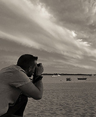

THANK YOU
I will like to start off saying thank you for taking your time in looking at my website.
Without you I will not be able to do this, an to show you the world through my eyes, which is my ultimate aim
Who am I then?
My name is Carlos, and although I am Spanish I have been in Scotland for over a decade. I came here on holiday and fell in love with the people and the places.
I got my first camera as a present for my first communion, when I was 8 years old. I have grown up admiring my dad's reflex camera, and his photos.
Although he is not a photographer, he has a good knowledge of light and how to use it on your favour. And with him beside me; the automatic Minolta camera that today rests in a shelf in my study, was too small to take the pictures that I wanted to take.
Whenever I could I stole my dad's camera. Unfortunately that was when you had to print all your photos, so never got away with it, but never got in trouble either.
It seemed logical to study journalism then, where I learned even more about photography, but not as much as I wanted. After I graduated, I decided to do a course on photography.
Over the years I have seen my style changing, sometimes with the situations arround me, sometimes because of personal growth, but in the end, it is thanks to all of you that is possible for me to continue showing you the world through my lense and in my own way.